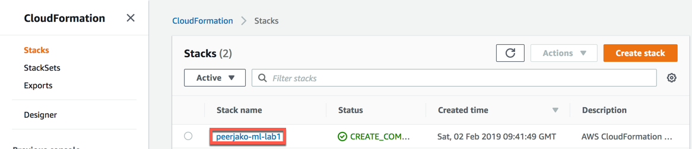
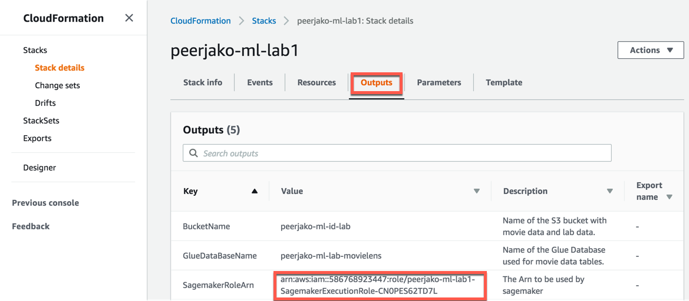
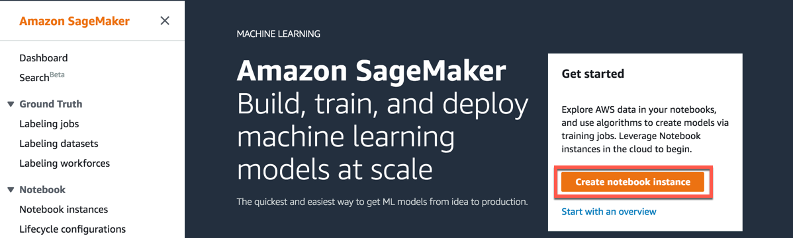
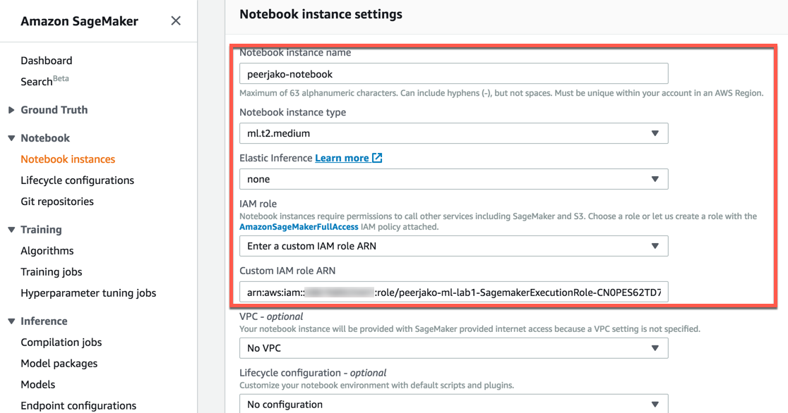
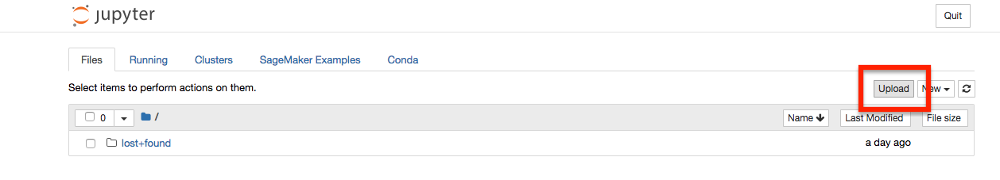
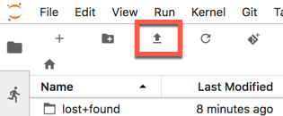

In the second lab, you are going to extract value from the data you got to know in the first lab.
In case you have been logged out, sign into the AWS Management Console https://console.aws.amazon.com/, and confirm that you are working the correct region.
We will need the value of the SagemakerRoleArn resource created by the CloudFormation stack from Lab 1. Use this link to go to the CloudFormation console, click on the name of your stack.


Now use this link to go to Amazon Sagemaker dashboard.
Start creating a Notebook by clicking Create notebook instance on the Amazon Sagemaker dashboard.


The rest of this lab will be done by working through the notebook document, which has three major parts:
On the Notebook instances page in Amazon SageMaker, open the notebook by clicking the Open Jupyter or Open JupyterLab link in the Actions column. A new browser tab will open showing the notebook home screen.
For this lab, you will be using a prepared Jupyter Notebook document. To import it, click Upload in the top right section of the notebook home screen or if using JupyterLab click on the Upload Arrow. Navigate to the Lab2 folder of the locally downloaded Immersion Day material and select the ML-Immersion-Day-Lab-2.ipynb file.

or

The document is uploaded and should appear in the files list of the home screen. Open it by clicking on it, which will open a new browser tab. Continue working with the lab from there.